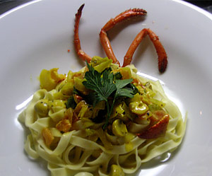

John's Hummer-Tagliatelle
5,5 von 6Eine Frühlingszwiebel (samt Grün) und eine Knoblauchzehe in 20 g Butter und etwas Olivenöl andünsten. Mit Rum ablöschen. Eine Hand voll kleine Champignons sowie ein Briefchen Safran dazugeben, etwas einkochen. 2 entkernte und geschälte in Würfelchen geschnittenen Tomaten ebenfalls dazu geben. Das Fleisch eins ganzen gekochten Hummers in kleine Stücke schneiden und unter die Sauce geben. Mit Salz und frischem schwarzem Pfeffer abschmecken, mit Tagliatelle servieren.
